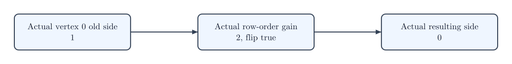
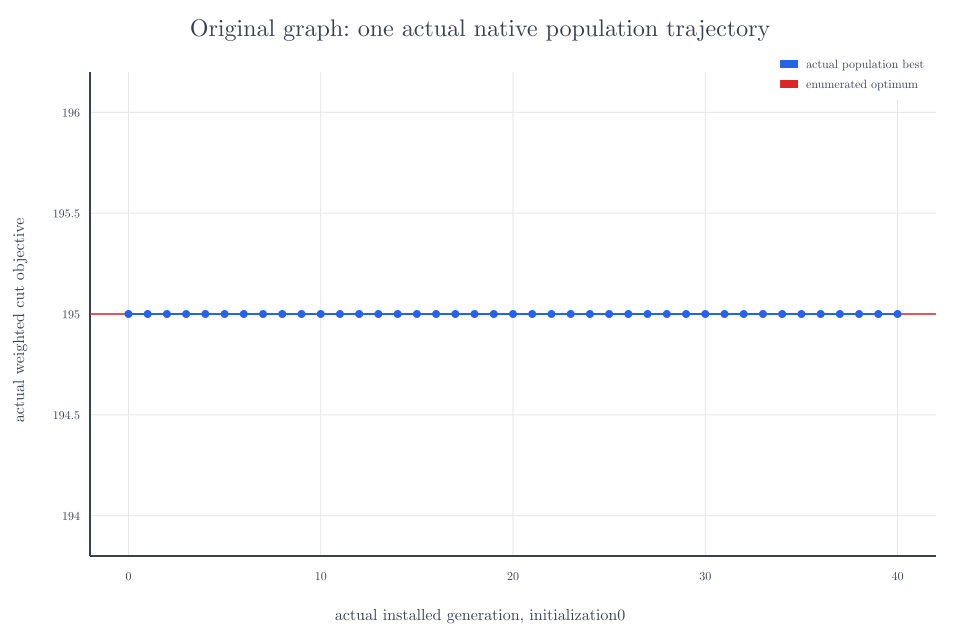
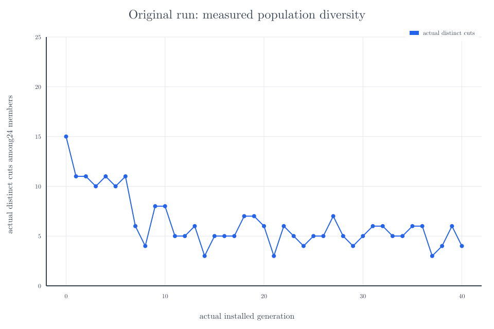
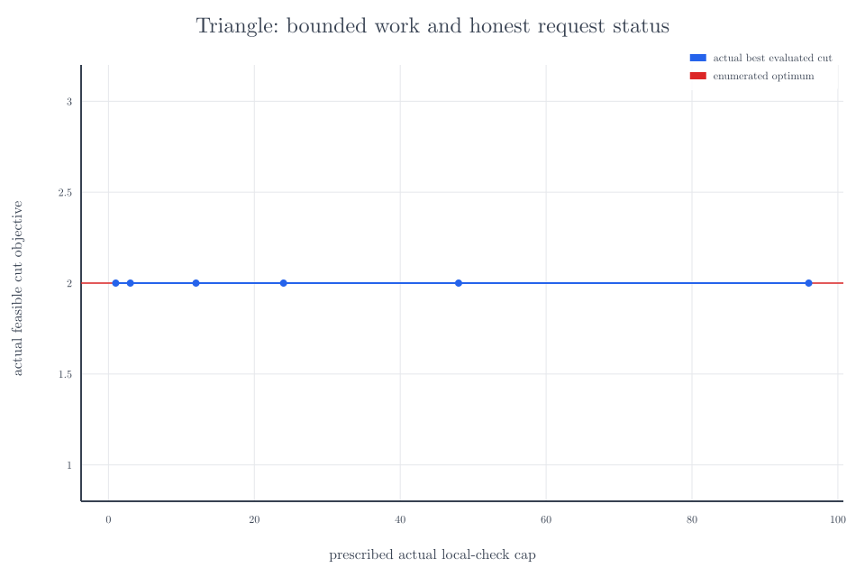

Memetic weighted MAX-CUT search
Abstract
Weighted MAX-CUT assigns each graph vertex to one of two sides to maximize crossing-edge weight. A population heuristic combines random partitions, selection, crossover, mutation and local refinement, but does not generally certify a global optimum. We expose actual native candidate/RNG/flip histories, retain the original sixteen-vertex graph and compare it with complete small-graph enumeration, while separating request completion from optimality.
Objective, local gain and population steps
A binary partition s assigns each vertex0 or1. Sum each undirected weighted edge once when its endpoints differ. Flipping vertex u changes only incident edges: an edge currently internal becomes crossing and contributes +w; a crossing edge becomes internal and contributes −w. Thus the real row-order gain test is:
The native local pass checks vertices in increasing order and immediately flips when the computed delta exceeds1e−12, so later checks see earlier accepted flips. Repeat until a complete sweep makes no flip. For exact arithmetic, every accepted flip strictly increases a finite-state objective; floating computations use the stated tolerance and are reported as native decisions, not exact-real certificates.
Initialize random binary partitions and locally refine them. Each offspring selects two parents by separate three-draw strict-fitness tournaments, performs uniform per-bit crossover, mutates each bit with probability1/N, then locally refines. Carry the first strict population winner unchanged into the next population before creating other offspring. This elitism makes the actual population-best objective nondecreasing; it does not prove the heuristic reaches the global maximum or outperforms an unmeasured baseline.
A tiny actual sequential delta
A unit-weight triangle has exact maximum cut two. The native trace retains actual candidate bits, every RNG draw and each sequential local check. The table below reads the first actual candidate’s full local-step span; the diagram reads its first actual before/delta/after decision rather than assuming every check flips.
#include <dm/dm.hpp>
int main() {
std::filesystem::create_directories("build");
dm::algorithms::MemeticGraph graph{{{1, 1}, {2, 1}}, {{0, 1}, {2, 1}},
{{0, 1}, {1, 1}}};
auto t = dm::algorithms::memetic_max_cut_trace(3, graph, 4, 2, 1);
auto &i = t.individuals.front();
std::print("| actual global sweep | actual vertex | actual old side | actual delta | actual flip | " "actual new side |\n| ---: | ---: | ---: | ---: | --- | ---: |\n");
for (std::size_t k = i.first_local; k < i.past_local; ++k) {
auto &s = t.local_steps[k];
std::print("| {} | {} | {} | {} | {} | {} |\n", s.sweep, s.vertex,
s.before, s.delta, s.flipped, s.after);
}
auto &s = t.local_steps[i.first_local];
dm::graphics::Diagram d;
d.node("before", {0, 0},
std::format("Actual vertex {} old side\n{}", s.vertex, s.before)).node("delta", {6, 0}, std::format("Actual row-order gain\n{}, flip {}", s.delta, s.flipped)).node("after", {12, 0}, std::format("Actual resulting side\n{}", s.after)).edge("before", "delta").edge("delta", "after");
d.save_svg("build/memetic_tiny.svg");
}| actual global sweep | actual vertex | actual old side | actual delta | actual flip | actual new side |
|---|---|---|---|---|---|
| 0 | 0 | 1 | 2 | true | 0 |
| 0 | 1 | 1 | 0 | false | 1 |
| 0 | 2 | 1 | 0 | false | 1 |
| 1 | 0 | 0 | -2 | false | 0 |
| 1 | 1 | 1 | 0 | false | 1 |
| 1 | 2 | 1 | 0 | false | 1 |

Retain the original sixteen-vertex graph and native stream
The native graph helper preserves the original xorshift64 seed999 construction: inspect upper-triangle pairs, include an edge on an odd draw, then draw its integer weight1..9. Both adjacency directions retain original insertion order. The original solver request uses population24,40 offspring generations and seed1. Its13/7/17 unsigned xorshift, modulo tournament choices, crossover bits, top53-bit mutation uniforms and zero-seed fallback retain the original stream conventions, including modulo bias.
The next program obtains the entire actual generation0..40 history from one native run. It does not rerun truncated independent optimizations to manufacture a trajectory. A separate native full-enumeration helper fixes vertex0 side0, exploiting complement symmetry, and checks every remaining partition on this small graph. Equality with that exact comparator supports this one fixture, not a general guarantee. A history can be flat if initialization already finds a strong candidate.
#include <dm/dm.hpp>
int main() {
std::filesystem::create_directories("build");
auto graph = dm::algorithms::memetic_demo_graph();
auto t = dm::algorithms::memetic_max_cut_trace(16, graph, 24, 40, 1);
auto exact = dm::algorithms::memetic_max_cut_exact(16, graph);
std::print("Actual completed request {}; actual best {:.0f}; complete-enumeration optimum {:.0f}; " "actual evaluated candidates {}; actual RNG draws {}; actual local checks {}.\n\n| actual " "installed generation | actual population best | actual mean fitness | actual distinct cuts " "modulo complement |\n| ---: | ---: | ---: | ---: |\n",
t.analysis.complete, t.analysis.result.value, exact.value,
t.analysis.work.individuals, t.analysis.work.rng_draws,
t.analysis.work.local_checks);
std::vector<double> x, y;
for (auto &g : t.generations) {
std::print("| {} | {:.0f} | {:.8f} | {} |\n", g.index, g.best_value,
g.mean_fitness, g.distinct_cuts);
x.push_back(g.index);
y.push_back(g.best_value);
}
auto p = dm::graphics::RPlot::create();
p.line(x, y, "actual population best", {37, 99, 235});
p.points(x, y, "", {37, 99, 235});
p.legend({"actual population best", "enumerated optimum"},
{{37, 99, 235}, {220, 38, 38}});
p.abline_h(exact.value, {220, 38, 38}, 1.5).x_label("actual installed generation, initialization0").y_label("actual weighted cut objective").title("Original graph: one actual native population trajectory").save_svg("build/memetic_original.svg");
}Actual completed request true; actual best 195; complete-enumeration optimum 195; actual evaluated candidates 944; actual RNG draws 35344; actual local checks 30048.
| actual installed generation | actual population best | actual mean fitness | actual distinct cuts modulo complement |
|---|---|---|---|
| 0 | 195 | 186.25000000 | 15 |
| 1 | 195 | 189.66666667 | 11 |
| 2 | 195 | 190.20833333 | 11 |
| 3 | 195 | 190.50000000 | 10 |
| 4 | 195 | 191.16666667 | 11 |
| 5 | 195 | 191.70833333 | 10 |
| 6 | 195 | 189.62500000 | 11 |
| 7 | 195 | 190.29166667 | 6 |
| 8 | 195 | 193.91666667 | 4 |
| 9 | 195 | 192.37500000 | 8 |
| 10 | 195 | 193.12500000 | 8 |
| 11 | 195 | 194.00000000 | 5 |
| 12 | 195 | 193.20833333 | 5 |
| 13 | 195 | 192.95833333 | 6 |
| 14 | 195 | 193.41666667 | 3 |
| 15 | 195 | 193.58333333 | 5 |
| 16 | 195 | 193.04166667 | 5 |
| 17 | 195 | 193.62500000 | 5 |
| 18 | 195 | 192.62500000 | 7 |
| 19 | 195 | 192.79166667 | 7 |
| 20 | 195 | 193.54166667 | 6 |
| 21 | 195 | 192.87500000 | 3 |
| 22 | 195 | 192.91666667 | 6 |
| 23 | 195 | 191.37500000 | 5 |
| 24 | 195 | 191.79166667 | 4 |
| 25 | 195 | 193.33333333 | 5 |
| 26 | 195 | 193.50000000 | 5 |
| 27 | 195 | 193.04166667 | 7 |
| 28 | 195 | 193.20833333 | 5 |
| 29 | 195 | 194.20833333 | 4 |
| 30 | 195 | 192.95833333 | 5 |
| 31 | 195 | 192.66666667 | 6 |
| 32 | 195 | 193.16666667 | 6 |
| 33 | 195 | 193.00000000 | 5 |
| 34 | 195 | 192.50000000 | 5 |
| 35 | 195 | 193.16666667 | 6 |
| 36 | 195 | 193.16666667 | 6 |
| 37 | 195 | 194.45833333 | 3 |
| 38 | 195 | 194.16666667 | 4 |
| 39 | 195 | 192.62500000 | 6 |
| 40 | 195 | 194.00000000 | 4 |

The actual initialization already attains the enumerated optimum195 on this fixture, and its best value stays195 through all40 offspring generations. The flat curve records that observation rather than an improvement caused by later generations.
Population diversity is an observation
A partition and its complete bit complement represent the same cut. The native generation snapshot therefore counts distinct cuts after identifying those complements, alongside the actual mean fitness. This summary is computed from the installed population and does not change solver RNG draws or selected algorithm counters. It measures this run’s diversity; it is not a bound on search quality or a proof that more distinct candidates improve the objective.
The next program reads another reproducible native run with the same original request and plots its actual installed-population diversity. Its identical seed/model reproduces the previous trajectory rather than adding independent replications or uncertainty intervals.
#include <dm/dm.hpp>
int main() {
std::filesystem::create_directories("build");
auto t =
dm::algorithms::memetic_max_cut_trace(16,
dm::algorithms::memetic_demo_graph(),
24, 40, 1);
std::vector<double> x, y;
std::print("| actual installed generation | actual distinct cuts modulo complement | actual mean " "fitness | actual selected best |\n| ---: | ---: | ---: | ---: |\n");
for (auto &g : t.generations) {
std::print("| {} | {} | {:.8f} | {:.0f} |\n", g.index, g.distinct_cuts,
g.mean_fitness, g.best_value);
x.push_back(g.index);
y.push_back(g.distinct_cuts);
}
auto p = dm::graphics::RPlot::create();
p.line(x, y, "actual distinct cuts", {37, 99, 235});
p.points(x, y, "", {37, 99, 235});
p.legend({"actual distinct cuts"}, {{37, 99, 235}});
p.y_limits(0, 25).x_label("actual installed generation").y_label(
"actual distinct cuts among24 members").title("Original run: measured population diversity").save_svg("build/memetic_diversity.svg");
}| actual installed generation | actual distinct cuts modulo complement | actual mean fitness | actual selected best |
|---|---|---|---|
| 0 | 15 | 186.25000000 | 195 |
| 1 | 11 | 189.66666667 | 195 |
| 2 | 11 | 190.20833333 | 195 |
| 3 | 10 | 190.50000000 | 195 |
| 4 | 11 | 191.16666667 | 195 |
| 5 | 10 | 191.70833333 | 195 |
| 6 | 11 | 189.62500000 | 195 |
| 7 | 6 | 190.29166667 | 195 |
| 8 | 4 | 193.91666667 | 195 |
| 9 | 8 | 192.37500000 | 195 |
| 10 | 8 | 193.12500000 | 195 |
| 11 | 5 | 194.00000000 | 195 |
| 12 | 5 | 193.20833333 | 195 |
| 13 | 6 | 192.95833333 | 195 |
| 14 | 3 | 193.41666667 | 195 |
| 15 | 5 | 193.58333333 | 195 |
| 16 | 5 | 193.04166667 | 195 |
| 17 | 5 | 193.62500000 | 195 |
| 18 | 7 | 192.62500000 | 195 |
| 19 | 7 | 192.79166667 | 195 |
| 20 | 6 | 193.54166667 | 195 |
| 21 | 3 | 192.87500000 | 195 |
| 22 | 6 | 192.91666667 | 195 |
| 23 | 5 | 191.37500000 | 195 |
| 24 | 4 | 191.79166667 | 195 |
| 25 | 5 | 193.33333333 | 195 |
| 26 | 5 | 193.50000000 | 195 |
| 27 | 7 | 193.04166667 | 195 |
| 28 | 5 | 193.20833333 | 195 |
| 29 | 4 | 194.20833333 | 195 |
| 30 | 5 | 192.95833333 | 195 |
| 31 | 6 | 192.66666667 | 195 |
| 32 | 6 | 193.16666667 | 195 |
| 33 | 5 | 193.00000000 | 195 |
| 34 | 5 | 192.50000000 | 195 |
| 35 | 6 | 193.16666667 | 195 |
| 36 | 6 | 193.16666667 | 195 |
| 37 | 3 | 194.45833333 | 195 |
| 38 | 4 | 194.16666667 | 195 |
| 39 | 6 | 192.62500000 | 195 |
| 40 | 4 | 194.00000000 | 195 |

Input, numeric and bounded-work contracts
The checked graph has exactly N ordered weighted lists. Every neighbour id is valid, weights are finite and each directed entry has an equal-weight reverse entry with matching multiplicity. Parallel edges are allowed and summed separately; self loops are rejected because the flip-gain formula would otherwise count them incorrectly. Signed finite weights are allowed. Original row order is preserved for floating sums. Complete absolute undirected weight range and actual objective/delta computations must remain finite; unrepresentable geometry and malformed populations/generations throw before evaluation. Every evaluated partition is binary and has exactly N entries.
Requested population size is positive, generations nonnegative. Runtime stores O(PN) population bits plus graph/validation and candidate state. Work depends on actual local checks and incident-row reads; no polynomial global-search or universal local-sweep bound is claimed. Empty graphs and population-one runs retain their actual native lifecycle. Complete=true means the requested initialization/generations finished, not that a global optimum was proved. locally_refined means the winning candidate completed its computed1e−12 no-flip terminal sweep.
An optional global local-check cap, zero unlimited, stops before the next vertex delta. The producer evaluates the actual partially refined candidate and returns complete=false with the best actually evaluated valid partition. Its winner can be marked not locally refined. Validation, random draws, objective evaluation and wall time are outside this selected-operation cap. Unfinished generations do not appear as installed snapshots.
Complete logical capture starts with5+2N+2E_list entries: five scalar run inputs, original graph vertex slots, neighbour-id/weight scalars and returned best bits. Add every actual RNG/local record, each candidate record and its two N-bit endpoint snapshots, and each installed generation record with PN population bits and P fitness values. Default cap one million; zero disables it. Fields, row headers, capacities, runtime/returned duplicate copies and bytes are excluded. Actual capture contributions are admitted before owned copies. A work stop returns complete actual bounded history; a capture failure throws without a prefix.
#include <dm/dm.hpp>
int main() {
std::filesystem::create_directories("build");
dm::algorithms::MemeticGraph graph{{{1, 1}, {2, 1}}, {{0, 1}, {2, 1}},
{{0, 1}, {1, 1}}};
auto exact = dm::algorithms::memetic_max_cut_exact(3, graph);
std::vector<double> x, y;
std::print("| prescribed local-check cap | actual local checks | complete requested run | best locally " "refined | initialized population | installed offspring generations | actual best objective " "| actual capture entries |\n| ---: | ---: | --- | --- | --- | ---: | ---: | ---: |\n");
for (std::size_t cap : {1, 3, 12, 24, 48, 96}) {
auto t = dm::algorithms::memetic_max_cut_trace(3, graph, 4, 2, 1, cap);
auto &a = t.analysis;
std::print("| {} | {} | {} | {} | {} | {} | {} | {} |\n", cap,
a.work.local_checks, a.complete, a.locally_refined,
a.initialized, a.generations_completed, a.result.value,
t.captured_entries);
x.push_back(cap);
y.push_back(a.result.value);
}
auto p = dm::graphics::RPlot::create();
p.line(x, y, "actual best evaluated cut", {37, 99, 235});
p.points(x, y, "", {37, 99, 235});
p.legend({"actual best evaluated cut", "enumerated optimum"},
{{37, 99, 235}, {220, 38, 38}});
p.abline_h(exact.value, {220, 38, 38}, 1.5).x_label("prescribed actual local-check cap").y_label("actual feasible cut objective").title("Triangle: bounded work and honest request status").save_svg("build/memetic_controls.svg");
}| prescribed local-check cap | actual local checks | complete requested run | best locally refined | initialized population | installed offspring generations | actual best objective | actual capture entries |
|---|---|---|---|---|---|---|---|
| 1 | 1 | false | false | false | 0 | 2 | 34 |
| 3 | 3 | false | false | false | 0 | 2 | 36 |
| 12 | 12 | false | true | false | 0 | 2 | 65 |
| 24 | 24 | false | true | true | 0 | 2 | 123 |
| 48 | 45 | true | true | true | 2 | 2 | 273 |
| 96 | 45 | true | true | true | 2 | 2 | 273 |

Verification and references
Native tests exhaust761 small integer-weighted graphs through four vertices,
compare complete native enumeration with independent full partition enumeration,
and verify heuristic feasibility and actual terminal computed gains without
demanding universal global success. They replay every RNG state/use, parent
tournament, crossover/mutation bit, sequential local delta/flip, candidate
endpoint and installed population, including elitist retention and capture
counts. The original56-edge fixture, objective195 and prefix-generation results
are retained. Work/capture limits, empty/population-one/seed-zero cases, signed
and parallel edges, symmetry/finite/shape/population guards, ownership and
absolute-range overflow are covered. Existing heuristic and formatting
regressions remain. The shared ten-report batch passes 71 CTest cases, 29
directly instrumented ASan/UBSan cases, 130 compiled and executed public
examples, 598/598 scoped documentation definitions and ten representative
hovers. Independent Python arbitrary-precision, hashlib, sorted-window, RNG,
polynomial, graph and full-assignment references verify 224,229 actual records.
Frozen comparisons preserve ordinary legacy outputs, including selected clique
identities, original density graphs and memetic partitions. Twelve checkout
headers and twelve identically installed headers compile independently; an
installed-header native consumer links and runs. All four complete programs and
all four native figures pass execution and visual review, and HTML/Markdown
exports preserve computed results and identical image bytes. Receipts:
build/mepml-conversion/batch-224-233/.
The report uses the standard memetic combination of population exploration and individual local refinement. It derives the native MAX-CUT gain formula and states every selection/mutation/termination convention explicitly. The sole global certificate shown is complete enumeration on the specified small fixture; no broad optimum or superiority claim is inferred from the heuristic name.
Historical context: Moscato (1989), On Evolution, Search, Optimization, Genetic Algorithms and Martial Arts: Towards Memetic Algorithms, C3P Report826. The author’s later primary paper, reference22, verifies that bibliographic attribution. The native MAX-CUT recipe and exact operational choices are specified in this report.